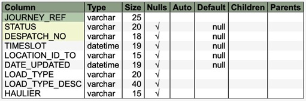

Package com.commander4j.db
Class JDBJourney
java.lang.Object
com.commander4j.db.JDBJourney
JDBJourney is a table associated with the despatch transaction. When
Dispatching pallets to a location it is an option to capture an external
tracking reference (Journey Ref). The option to determine the requirement of
Journey Ref is determined by a property of the receiving location. See
JDBLocation class and APP_LOCATION table. The Journey Refs which can be used
as either inserted manually using the appropriate screen within the
application or read in from a XML message using the application interfacing
module.

-
Field Summary
FieldsModifier and TypeFieldDescriptionstatic intstatic intstatic int -
Constructor Summary
ConstructorsConstructorDescriptionJDBJourney(String host, String session) JDBJourney(String journey, String status, String desp, Timestamp updated, String loadType, String loadTypeDesc, String haulier) JDBJourney(ResultSet rs) -
Method Summary
Modifier and TypeMethodDescriptionvoidclear()booleancreate()booleanbooleandelete()booleangetJourneyList(String defaultItem) getJourneyRefData(PreparedStatement criteria) getJourneyRefDataResultSet(PreparedStatement criteria) booleanbooleangetJourneyRefProperties(String journey) voidbooleanisValid()booleanbooleanisValidJourneyRef(String journey) voidsetDateUpdated(Timestamp updated) voidsetDespatchNo(String despNo) voidsetHaulier(String haulier) voidsetJourneyRef(String journey) voidsetLoadType(String type) voidsetLoadTypeDesc(String desc) voidsetLocationTo(String location) voidvoidsetTimeslot(Timestamp timeslot) booleanupdate()
-
Field Details
-
field_journey_ref
public static int field_journey_ref -
field_despatch_no
public static int field_despatch_no -
field_status
public static int field_status
-
-
Constructor Details
-
JDBJourney
-
JDBJourney
-
JDBJourney
-
-
Method Details
-
getLoadType
-
getLoadTypeDesc
-
getHaulier
-
setLoadType
-
setLoadTypeDesc
-
setHaulier
-
clear
public void clear() -
create
-
create
public boolean create() -
delete
public boolean delete() -
delete
-
getErrorMessage
-
getDespatchNo
-
getDateUpdated
-
getTimeslot
-
getJourneyRef
-
getLocationTo
-
getJourneyList
-
getJourneyRefData
-
getJourneyRefDataResultSet
-
getJourneyRefProperties
public boolean getJourneyRefProperties() -
getJourneyRefProperties
-
getPropertiesfromResultSet
-
getStatus
-
isValid
public boolean isValid() -
isValidJourneyRef
public boolean isValidJourneyRef() -
isValidJourneyRef
-
setDespatchNo
-
setDateUpdated
-
setTimeslot
-
setLocationTo
-
setJourneyRef
-
setStatus
-
update
public boolean update()
-